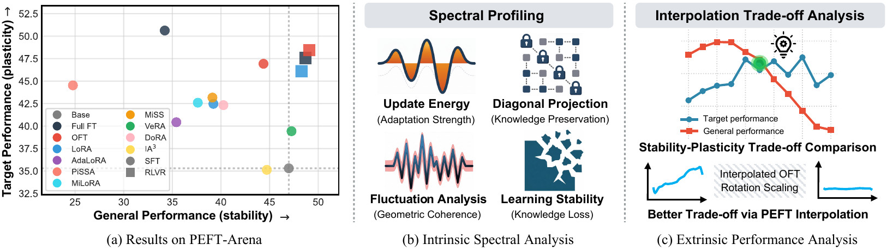
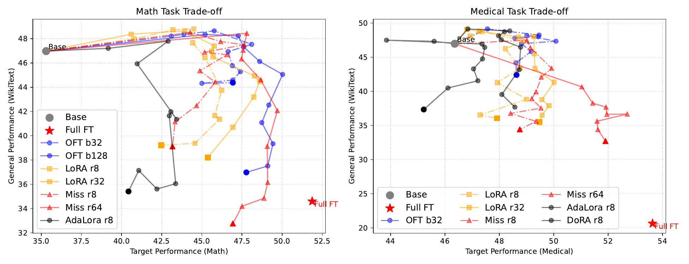
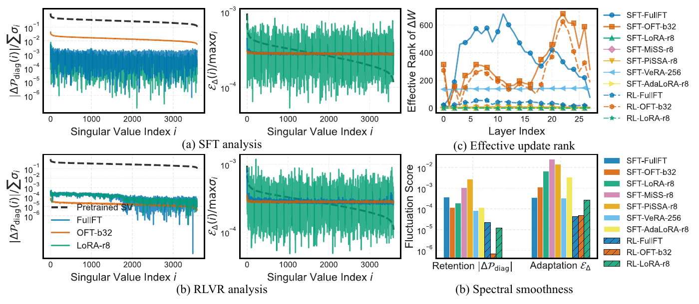
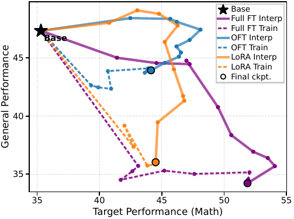
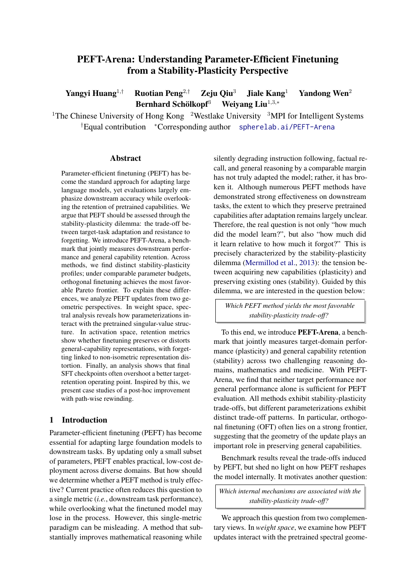
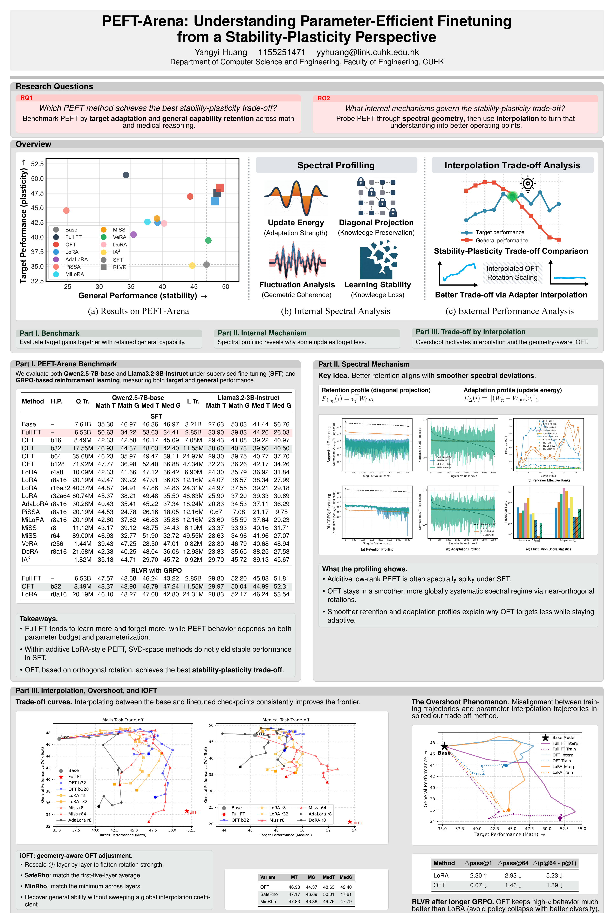

Evaluate PEFT through the joint lens of target adaptation, retained general ability, and update geometry.

PEFT-Arena combines benchmark evaluation, spectral retention-adaptation profiling, and interpolation-based trade-off analysis to study how PEFT methods balance plasticity and stability.
Paper Summary
Parameter-efficient finetuning (PEFT) has become the standard approach for adapting large foundation models, yet existing evaluations focus almost exclusively on downstream accuracy while largely overlooking the preservation of pretrained capabilities. PEFT-Arena argues that PEFT should be evaluated through the lens of the stability-plasticity dilemma: the trade-off between task adaptation and resistance to forgetting.
The benchmark jointly measures target-domain performance on mathematical and medical reasoning together with retained general ability on BBH, IFEval, and NQ, under both supervised finetuning (SFT) and reinforcement learning with verifiable rewards (RLVR / GRPO). Across Qwen2.5-7B and Llama3.2-3B-Instruct, all PEFT methods exhibit distinct stability-plasticity trade-off patterns, with OFT typically defining the most favorable Pareto frontier at comparable parameter budgets.
Beyond benchmark-level metrics, the paper introduces a spectral retention-adaptation profiling framework that decomposes weight updates into retention and adaptation components and measures their smoothness. Smoother spectral profiles correlate with better retention. The paper further identifies an overshoot phenomenon in SFT and studies interpolation-based trade-off recovery, including the geometry-aware iOFT variant.
Driving Questions
Benchmark PEFT by target adaptation and retained general capability across math and medical reasoning, under both SFT and RLVR.
Analyze spectral geometry and interpolation trajectories to understand why some parameterizations stay stable while others overshoot.
Benchmark Design
Main Findings
Full finetuning tends to deliver the strongest target gains, but it also incurs the largest forgetting. Target-only reporting systematically overestimates post-training quality.
At comparable parameter budgets, OFT consistently balances adaptation and retention better than additive low-rank baselines across the paper's main settings.
Under on-policy RLVR with GRPO, models often achieve stable target improvements with substantially less general-capability erosion than under SFT.
Smoother spectral retention and adaptation profiles correlate with better retention. Interpolation also reveals an SFT overshoot region and motivates geometry-aware trade-off recovery via iOFT.
Results
The benchmark reports target-domain performance together with retained general capability, rather than reducing post-training quality to a single downstream score. The strongest PEFT methods are those that move toward the upper-right frontier rather than simply maximizing target performance.

The paper decomposes updates into retention and adaptation views and quantifies local fluctuation across singular directions. OFT tends to remain in a smoother and more coherent spectral regime than spikier additive updates.

Training trajectories and interpolation trajectories are misaligned. This reveals that final SFT checkpoints often overshoot the best trade-off point, and motivates interpolation-based recovery and iOFT.

Artifacts


Official Release
run.py interfacebash setup_env.sh
python run.py train sft ...
python run.py train rl ...
python run.py eval ...
python run.py merge ...Reference
@misc{huang2026peftarena,
title={PEFT-Arena: Understanding Parameter-Efficient Finetuning from a Stability-Plasticity Perspective},
author={Yangyi Huang and Ruotian Peng and Zeju Qiu and Jiale Kang and Yandong Wen and Bernhard Sch{\"o}lkopf and Weiyang Liu},
year={2026},
url={https://spherelab.ai/PEFT-Arena}
}